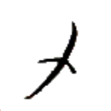
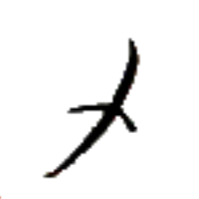
アㇷ゚→ 【四】
[連体詞] 4つの
[名詞] 4
[略号] (音楽)基準音の7半音上の音、(移動ドで)ソの音
四之衣 アㇷ゚→ア·タㇰ→ 【四之衣】
[名詞] アパータ、アープアターク、アーパターク
ラネーメやヴェフィスの伝統的な衣服の一つ。袖があり、四枚の布を繋いで作られる。素材は綿や麻が多い。
質糸 チㇳ⤴バイ⤴ 【質糸】
[名詞] チトバイ（地名）
発音注意。
[名詞] （比喩的に）アイル共和国文化省
文化省および関連機関がチトバイに集中していることから。
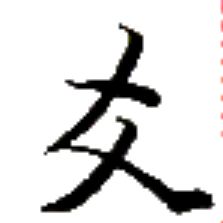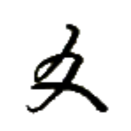
マㇰ⤴ (俗に) マㇰ→ 【値】
[名詞] 数、値、点数
[助数詞] ～点（ゲームなどの点数）
[助数詞] ～個の
「～番目」と紛らわしいときなどに、区別のため明示的に使う場合がある。
値絵 マㇰ⤴レゥㇰ→ 【値絵】
[名詞] （数量の割合や変遷などを見せるための）グラフ
終値 タ·マㇰ⤴ 【終値】
[名詞] （ボードゲームにおける）季節終了得点（季【季】が終わったタイミングで得られる得点）
加値 アㇳ·マㇰ⤴ 【加値】
[名詞] （ボードゲームにおける）季節終了時のボーナス得点
時値 カㇰ·マㇰ⤴ 【時値】
[名詞] （ボードゲームにおける）臨時点（なんらかの条件を満たしたときに得られる得点）
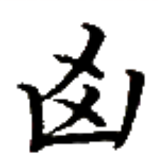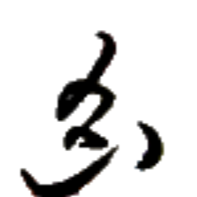
テゥン→ 【混】
[動詞] 混ぜる、シャッフルする
[状態動詞] 混ざっている
[略号] (音楽)基準音の5半音上の音、(移動ドで)ファの音
混混 テゥン→テゥン→ 【混混】
[動詞] 混ぜる、シャッフルする
[状態動詞] ぐちゃぐちゃである、混沌としている、ごちゃごちゃとしている
獣混 ザウㇷ゚→テゥン→ 【獣混】
[名詞] セッカイクで馬【馬】と虎【虎】を混同すること
蜜石島 ズィㇰ⤴ズィュー⤴ドㇷ゚→ 【蜜石島】
[名詞] シュケープラローシュ島（リナエスト・オルス共和国を構成する島の一つ）
圧心享蜜 ベゥㇳ⤴ヒアー→ゼゥㇷ゚·ズィㇰ⤴ 【圧心享蜜】
[成句] 無理強いをして成果を出すこと
タムツイにおいては忌まれる発想だが、この成句を「締め切りがあると、やる気が出る」という肯定的な意味で捉える人もいる。
 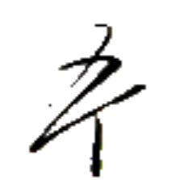
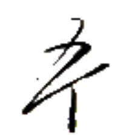
 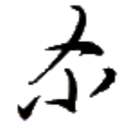
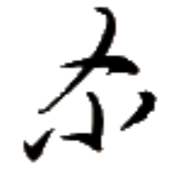
 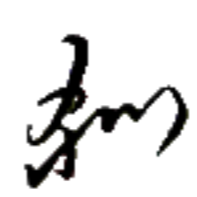
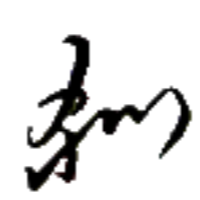